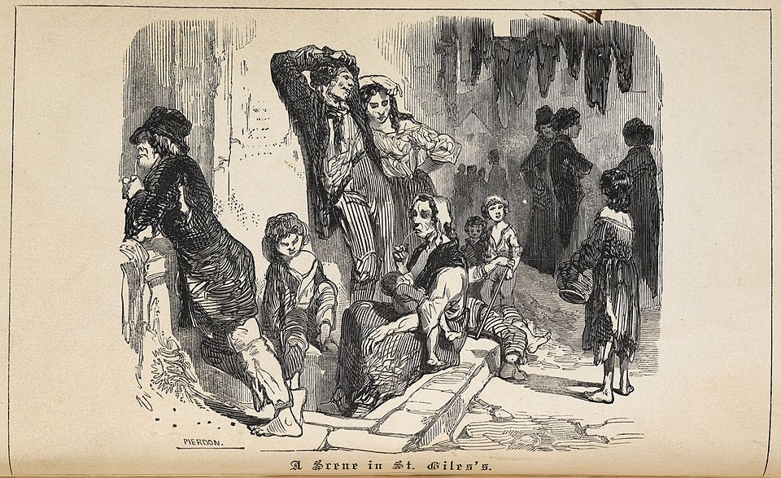
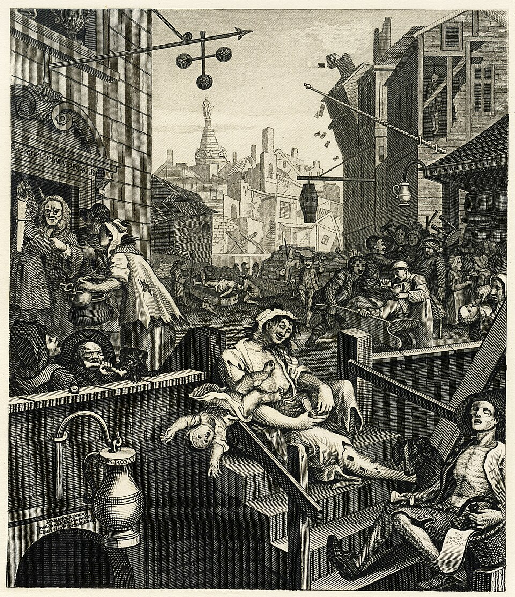

Part I The Brewery
The Horseshoe Brewery on Tottenham Court Road was one of the two largest breweries in early 19th-century London, alongside Whitbread's operation. Founded in 1764, it became famous for its porter — a dark, malty beer that was the most popular alcoholic drink in the capital. By 1812, it was brewing over 102,000 imperial barrels annually.
In 1809, Sir Henry Meux — son of a brewer who had built the largest vat in London years earlier — emulated his father's ambition. He commissioned a wooden fermentation vessel of staggering proportions: 22 feet tall, capable of holding 18,000 imperial barrels, roughly 650,000 gallons, or nearly 1 million pints. The entire structure was held together by eighty long tons of iron hoops, each weighing 700 pounds.
Porter was left to mature in these immense vats for several months — sometimes up to a year for the finest batches. On the day everything went wrong, one such vat held 3,555 imperial barrels of 10-month-old porter, filled to within four inches of the top.
Part II St. Giles — The Rookery
Behind the brewery lay New Street, a small cul-de-sac within the St. Giles rookery — one of London's most desperate slums. Covering just eight acres, it was a "perpetually decaying slum seemingly always on the verge of social and economic collapse," as scholar Richard Kirkland described it. The preacher Thomas Beames called it "a rendezvous of the scum of society."
This squalid neighborhood had famously inspired William Hogarth's 1751 print Gin Lane, one of the most powerful social commentaries in British art. By 1814, conditions had scarcely improved. The homes flanking the brewery were decrepit tenements, their cellars inhabited by families so poor they had nowhere else to go.

A Scene in St. Giles's — the rookery, c. 1850. The neighborhood behind the brewery was among the poorest in London. Source: The British Library / Wikimedia Commons

William Hogarth's Gin Lane (1751), inspired by the St. Giles rookery. The brewery's rear wall loomed over the very streets Hogarth had immortalized decades earlier. Source: Wikimedia Commons
The scene showed a desolation that presented a most awful and terrific appearance, equal to that which fire or earthquake may be supposed to occasion.
— The Morning Post, October 1814Part III The Sequence
October 17, 1814
George Crick, the brewery's storehouse clerk, climbed up to inspect the massive fermentation vat and noticed that one of the 700-pound iron hoops had slipped off. This happened two or three times a year — routine, unremarkable. He told his supervisor, who replied "that no harm whatever would ensue." Crick was told to write a note to Mr. Young, a brewery partner, to have it fixed later.
An hour later, Crick was standing on a platform 30 feet from the vat, note in hand, when the vessel burst with no warning.
The force was apocalyptic. The escaping porter knocked the stopcock off a neighboring vat, which began pouring its contents into the chaos. Several hogsheads of porter were smashed. By the time it was over, between 128,000 and 323,000 imperial gallons of beer — 580,000 to 1.47 million liters — had been unleashed in one continuous wave.
The pressure destroyed the brewery's rear wall: 25 feet high, two and a half bricks thick. Bricks were knocked upward and rained down on the roofs of Great Russell Street houses. On the brewery side, three workmen had to be pulled from the rubble, all surviving. Outside…
The Flood
A wave of porter approximately 15 feet high swept through New Street like a tsunami of black malt. Houses crumbled. Beer poured into cellars with no drainage, rising fast enough that people had to climb onto tables and furniture to avoid drowning.
Part IV The Dead
Eight people lost their lives. All were women and children. None of them had anything to do with the brewery.
Part V The Aftermath
The scene was apocalyptic. The Morning Post reported that it showed "a scene of desolation that presents a most awful and terrific appearance, equal to that which fire or earthquake may be supposed to occasion." Rescuers — their clothes drenched in hot malt liquor — waded through waist-high beer, digging through rubble with their bare hands, trying to silence the gawkers so they could hear cries for help.
Watchmen at the brewery charged spectators to view the wreckage, and hundreds came. It was dark tourism, nearly two centuries before the term existed.
A coroner's inquest was held two days later, on October 19. The jury returned a verdict that the victims had died "casually, accidentally and by misfortune" — essentially an Act of God. Meux & Co were absolved of liability and owed no compensation to the destitute families of the dead.
The disaster cost the company £23,000 — the lost beer, damaged buildings, and rebuilding the vat. They came within a hair's breadth of bankruptcy. Only after a private petition to Parliament did they recover approximately £7,250 from HM Excise as a rebate on the destroyed beer's taxes.
Part VI Why You've Never Heard of It
Stories later arose of crowds collecting the spilled beer, mass drunkenness, even a death from alcohol poisoning. There is no evidence of any of this in newspapers of the time. The crowds were described as orderly and well-behaved. The myth of beer-swigging Londoners appears to be a Victorian urban legend — perhaps born of the press's hostility toward the Irish immigrant population of St. Giles. If there had been misbehavior, the papers of 1814 would not have hesitated to report it.
The disaster faded from popular memory because it sat at an uncomfortable intersection: it was too silly to be taken seriously as history, too tragic to be treated as comedy.
Part VII Legacy
The brewery itself — the Horseshoe Brewery — resumed operations soon after the flood, but not for long in the grand scheme. It closed in 1921 and was demolished the following year. The Dominion Theatre now stands on the site where 323,000 gallons of beer once poured through London's poorest streets.
Meux & Co survived, brewed through the Victorian era, but eventually went into liquidation in 1961.
The most lasting impact was on the brewing industry itself: the London Beer Flood accelerated the industry-wide shift away from massive wooden fermentation vats. Within decades, breweries replaced them with lined concrete vessels — a change that eliminated the risk of catastrophic failure at the scale seen in 1814.
It's a small footnote in the history of industrial safety, one that cost eight lives to write.
| 1764 | Horse Shoe Brewery founded |
| 1809 | Sir Henry Meux purchases the brewery |
| 1810 | Giant 22-foot wooden vat constructed |
| Oct 17, 1814, ~4:30 PM | George Crick spots a slipped iron hoop on the fermentation vat |
| Oct 17, 1814, ~5:30 PM | The vat bursts, unleashing up to 323,000 imperial gallons of porter |
| Oct 19, 1814 | Coroner's inquest: verdict of "casually, accidentally and by misfortune" |
| 1921 | Horseshoe Brewery closes |
| 1922 | Brewery demolished; Dominion Theatre later built on the site |
| 1961 | Meux & Co enters liquidation |
Historical Images
All images sourced from Wikimedia Commons (public domain). No AI-generated images used on this page. ALL HISTORICAL IMAGES